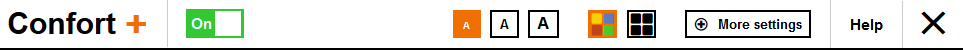
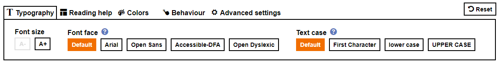
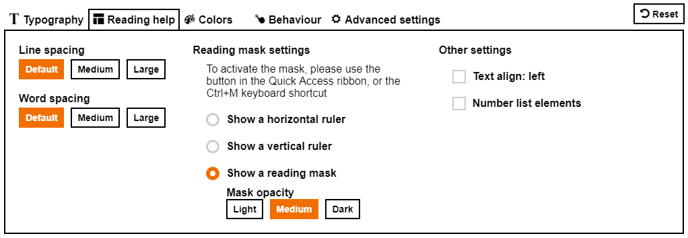
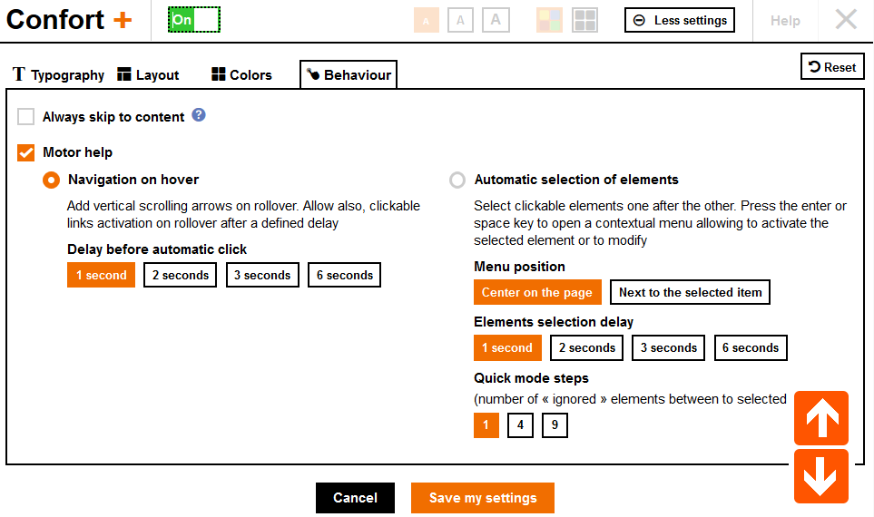

The Orange Confort+ service
The Orange Confort+ service
Orange Confort+: an Open source solution to enhance Confort for all and highlight accessible sites!
This service provides around twenty adjustments to adapt web sites to your needs: whether you have visual impairments or simple eyestrain, problems of word recognition because of dyslexia or others reasons, difficulty to use a mouse or to setup your computer, Orange Confort + brings you solutions: a setting to be made once and all the web sites will take your preferences into account.
Orange Confort+ is a browser extension, free to download, available for Firefox, Chrome and Internet Explorer 11

Who should use Orange Confort+ service
The Orange Confort + service was created by Orange. It provides significant assistance to users with motor, visual or cognitive disabilities (such as dyslexia), and improves the user experience for all. Who does not wish, by the end of the day, to increase the size of the fonts or the color contrast on a website?
Our user-centric design ensures a clear and easy-to-use interface.
The settings have been designed to meet the needs of the largest number of people without impacting performance.
This service is based on a core principle: one simply cannot categorize the preferences of a user in front of a web site according to a predefined typology, whatever the situation of handicap —or none at all. The service therefore offers flexibility in the settings’ customization, in order to allow a user to choose what suits them best.
To improve the user experience and make it easier to use, the Orange Confort + service provides real-time visualization of the settings. Thus, the user can very quickly find and apply the optimal settings to their needs. The service is available in French, English and Spanish. The default language is that of the visited site, and can be customized.
The service guarantees the preservation of the informative content, all the information on the web page remains available when the service is activated.
Our user-centric design ensures a clear and easy-to-use interface.
The settings have been designed to meet the needs of the largest number of people without impacting performance.
This service is based on a core principle: one simply cannot categorize the preferences of a user in front of a web site according to a predefined typology, whatever the situation of handicap —or none at all. The service therefore offers flexibility in the settings’ customization, in order to allow a user to choose what suits them best.
To improve the user experience and make it easier to use, the Orange Confort + service provides real-time visualization of the settings. Thus, the user can very quickly find and apply the optimal settings to their needs. The service is available in French, English and Spanish. The default language is that of the visited site, and can be customized.
The service guarantees the preservation of the informative content, all the information on the web page remains available when the service is activated.
Settings offered by the service
-
Typography
Enlarging characters, changing the fonts and the spacing in the text: useful for dyslexic users, users with vision problems, or simply subject to visual fatigue. 
-
Layout
Changing the layout, displaying a reading rule: mainly useful for visually impaired and cognitively impaired users who have difficulty identifying the information on the page, as well as motor disabled users who can’t use the mouse or those using keyboard navigation only. 
-
Colors
Choosing a custom palette for the text color and page background.
-
Behavior

On-hover navigation
This help is very useful for users who are unable to press the mouse or the keyboard. Displays an elevator to scroll through the page, on mouse rollover above the two up / down arrows, without any click needed. And when the mouse is above a clickable element of the page (e.g. a link), it is activated after a user-defined delay: 1 second, 2 seconds, or more.Automatic selection of elements navigation
This support is essential for users who cannot use the mouse, but can only push on a keypad/keyboard. Automatically scans all clickable elements of the page as well as all forms. Pressing the Space or Enter key on the keyboard opens a context menu which allows you to select the following: activate the selected item, keep on navigating the page, switch to fast navigation mode (2 items by 2 or 5 by 5, etc.), or navigate backwards.